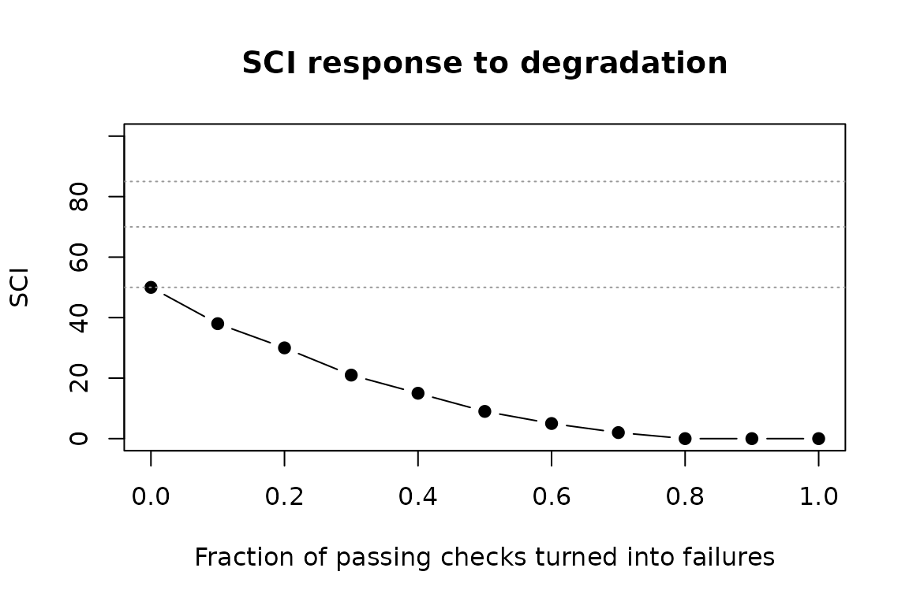

A composite score is only useful if it behaves the way its users expect. This article documents how the Submission Confidence Index (SCI) was checked against a set of validity criteria, and it is honest about the one criterion that cannot be checked with public data.
What can and cannot be validated
The ideal test of a readiness score would compare it against real regulatory outcomes: score a large set of historical submissions, then check whether low scores predicted refuse-to-file letters, information requests, or review delays. That study is not possible here. Regulators do not publish per-submission outcomes linked to dataset-level quality metrics, so there is no public ground-truth label to fit or test against. Claiming predictive validity without that data would be dishonest.
What can be established, and what this article covers, is the validity that does not need outcome labels:
- Construct validity: the score falls as evidence gets worse, and never rises. This is checked with a degradation curve.
- Discriminant validity: a clean package and a broken package land in clearly different decision bands.
- Concurrent validity: the score agrees with an independent count of conformance findings, the kind of figure a reviewer reads off a validation report.
- Robustness: the score and its ranking are stable under reasonable changes to the pillar weights.
The final section is explicit about what a predictive study would need and points to a worked example on real public data.
A worked evidence table
The checks below use a single evidence table with a spread of domains, severities, and results. Everything is built from base data frames so this article is fully reproducible.
make_evidence <- function(domain, severity, result, id_prefix = "IND") {
ctx <- suppressMessages(
r4subcore::r4sub_run_context(study_id = "VALDEMO", environment = "DEV")
)
df <- data.frame(
asset_type = "dataset",
asset_id = "ADSL",
source_name = "demo",
indicator_id = paste0(id_prefix, "-", seq_along(result)),
indicator_name = paste("check", seq_along(result)),
indicator_domain = domain,
severity = severity,
result = result,
stringsAsFactors = FALSE
)
suppressMessages(r4subcore::as_evidence(df, ctx = ctx))
}
domains <- rep(c("quality", "trace", "risk", "usability"), each = 5)
severities <- rep(c("info", "low", "medium", "high", "critical"), times = 4)
results <- rep("pass", 20)
evidence <- make_evidence(domains, severities, results)
compute_sci(compute_pillar_scores(evidence))$SCI
#> [1] 50Construct validity: the score responds to degradation
sci_degradation_curve() turns a growing number of
passing checks into failures and records the SCI at each step. Checks
are degraded in order of their contribution to the baseline score, so
the curve shows the steepest descent the evidence allows. A valid index
must never improve when a check is broken.
curve <- sci_degradation_curve(evidence, n_steps = 10)
curve
#> # A tibble: 11 × 6
#> step n_degraded frac_degraded SCI band delta
#> <int> <int> <dbl> <dbl> <chr> <dbl>
#> 1 0 0 0 50 conditional NA
#> 2 1 2 0.1 38 high_risk -12
#> 3 2 4 0.2 30 high_risk -8
#> 4 3 6 0.3 21 high_risk -9
#> 5 4 8 0.4 15 high_risk -6
#> 6 5 10 0.5 9 high_risk -6
#> 7 6 12 0.6 5 high_risk -4
#> 8 7 14 0.7 2 high_risk -3
#> 9 8 16 0.8 0 high_risk -2
#> 10 9 18 0.9 0 high_risk 0
#> 11 10 20 1 0 high_risk 0sci_monotone_check() confirms the curve never rises. A
rising step would be a defect in the scoring model.
chk <- sci_monotone_check(curve)
chk$monotone
#> [1] TRUE
chk$max_increase
#> [1] 0
The dotted lines mark the band thresholds. As failures accumulate the score crosses from one band into the next, in the expected direction.
Discriminant validity: clean and broken packages separate
Two packages at the extremes should land in clearly different bands: a clean package where every check passes, and a broken package with failures concentrated in the more severe checks.
clean <- make_evidence(domains, severities, rep("pass", 20), "CLEAN")
broken_results <- rep("pass", 20)
broken_results[severities %in% c("medium", "high", "critical")] <- "fail"
broken <- make_evidence(domains, severities, broken_results, "BROKEN")
clean_sci <- compute_sci(compute_pillar_scores(clean))
broken_sci <- compute_sci(compute_pillar_scores(broken))
data.frame(
package = c("clean", "broken"),
SCI = c(clean_sci$SCI, broken_sci$SCI),
band = c(clean_sci$band, broken_sci$band)
)
#> package SCI band
#> 1 clean 50 conditional
#> 2 broken 35 high_riskThe clean and broken packages fall in different bands, with a wide gap between their scores. The clean package does not reach the top band here because its absolute score is capped by the mix of severities it contains. That cap is a calibration finding in its own right, examined below. The point of this check is the separation and ordering, which hold: the clean package scores well above the broken one.
Concurrent validity: agreement with an independent count
conformance_findings() summarises an evidence table into
a single severity-weighted count of unresolved findings. It does not use
the SCI pillar weights, so it is an independent reference. Across a
gradient of packages with a rising share of failures, a higher SCI
should line up with fewer findings.
fractions <- seq(0, 0.9, by = 0.1)
gradient <- lapply(fractions, function(f) {
res <- rep("pass", 20)
n_fail <- round(f * 20)
if (n_fail > 0) res[seq_len(n_fail)] <- "fail"
ev <- make_evidence(domains, severities, res)
data.frame(
fraction_failed = f,
SCI = compute_sci(compute_pillar_scores(ev))$SCI,
findings = conformance_findings(ev)
)
})
gradient <- do.call(rbind, gradient)
gradient
#> fraction_failed SCI findings
#> 1 0.0 50.0 0.00
#> 2 0.1 37.8 0.25
#> 3 0.2 32.5 1.50
#> 4 0.3 27.5 2.50
#> 5 0.4 21.2 3.25
#> 6 0.5 20.0 5.00
#> 7 0.6 11.2 5.25
#> 8 0.7 7.5 6.50
#> 9 0.8 4.5 7.50
#> 10 0.9 0.8 8.25
# Spearman rank correlation between the SCI and the independent finding count.
cor(gradient$SCI, gradient$findings, method = "spearman")
#> [1] -1The correlation is strongly negative: as the independent finding count rises, the SCI falls. The two measures agree on ordering while remaining distinct in how they treat severity, so the SCI is not simply a restatement of the finding count.
Robustness: stability under alternative weights
sci_sensitivity_analysis() recomputes the SCI across a
grid of weight scenarios. A score that flips bands under small,
defensible weight changes would be fragile.
grid <- data.frame(
quality = c(0.35, 0.40, 0.25, 0.30),
trace = c(0.25, 0.20, 0.30, 0.25),
risk = c(0.25, 0.25, 0.25, 0.30),
usability = c(0.15, 0.15, 0.20, 0.15)
)
partial <- make_evidence(domains, severities,
c(rep("fail", 6), rep("pass", 14)))
sa <- sci_sensitivity_analysis(partial, weight_grid = grid)
sa
#> # A tibble: 4 × 7
#> scenario quality trace risk usability SCI band
#> <int> <dbl> <dbl> <dbl> <dbl> <dbl> <chr>
#> 1 1 0.35 0.25 0.25 0.15 27.5 high_risk
#> 2 2 0.4 0.2 0.25 0.15 26 high_risk
#> 3 3 0.25 0.3 0.25 0.2 31.5 high_risk
#> 4 4 0.3 0.25 0.3 0.15 30 high_risk
# Spread of the SCI across all weight scenarios.
diff(range(sa$SCI))
#> [1] 5.5A small spread across scenarios, and a stable band, mean the score does not hinge on one particular choice of weights.
A calibration finding
The checks above all concern how the score behaves as evidence changes. Running them surfaced a separate point about the score’s absolute level that is worth recording plainly.
The scoring model gives a passing check a contribution of
1 - severity_weight. Severity therefore discounts the
credit a check earns for passing, rather than weighting the penalty it
incurs for failing. The effect is easiest to see with a package where
every check passes, scored at each severity level in turn.
by_severity <- lapply(
c("info", "low", "medium", "high", "critical"),
function(s) {
ev <- make_evidence(
domain = c("quality", "trace", "risk", "usability"),
severity = rep(s, 4),
result = rep("pass", 4)
)
r <- compute_sci(compute_pillar_scores(ev))
data.frame(severity = s, SCI = r$SCI, band = r$band)
}
)
do.call(rbind, by_severity)
#> severity SCI band
#> 1 info 100 ready
#> 2 low 75 minor_gaps
#> 3 medium 50 conditional
#> 4 high 25 high_risk
#> 5 critical 0 high_riskEvery check passes in all five packages, yet the score falls from 100
to 0 as severity rises, and an all-passing high-severity package is
labelled high_risk. That is the opposite of the intended
reading. It happens because severity discounts passing credit instead of
amplifying failure penalties.
A more standard formulation would score each check as
1 - (1 - result_score) * severity_weight, so a pass always
scores 1 regardless of severity, an info failure is harmless, and a
critical failure scores 0. That change is left for a future release: it
alters every existing score, so it should be made deliberately and,
ideally, calibrated against the outcome data described next rather than
adopted on intuition alone. The finding is recorded here so the current
behaviour is documented and testable.
The limit of this validation
Everything above is construct, discriminant, concurrent, and robustness validity. None of it is predictive validity against regulatory decisions, because that data is not public.
What a predictive study would need
A genuine outcome study would need historical submissions paired with their review outcomes: information requests, review-clock extensions, or filing decisions, each linked to the evidence available at submission time. That requires a sponsor consortium willing to contribute past submissions and their outcomes under a shared agreement. Until such a dataset exists, the honest claim for the SCI is the one this article supports: it responds correctly to evidence quality, separates good packages from bad ones, agrees with an independent finding count, and is stable to reasonable weighting choices.
For a worked example on real public data, see the CDISC pilot case
study in the r4subpharma package, which scores an ADaM
package built by admiral against its metacore
specification.